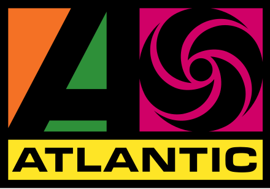
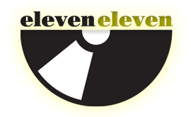

|
Le genre de music que produit le chanteur,compositeur Charlie Puth tourne autour de la Pop,R&B et Soul, mais qu'est ce que la Pop le R&B et la Soul La Pop est née en 1960 au Royaume Uni et aux Etats-Unis On peut discerner trois caractéristiques principales de la music Pop.
Le R&B est caracteriser un mélange de rhythm et de blues d'ou son abréviation R&B, ce genre musicale est originallement crée pour danser. la Soul est un dérivé du rythm and blues et du gospel |
Les Labels |
|
Charlie Puth travail avec plusieurs Labels ayant réussi a percer sur divers plateformes, il est donc connu et rechercher par les Labels. Les labels avec qui ils travaillent sont "Atlantic Recording Corporation", "eleveneleven" et "Artist Partner Group". |
|
| Atlantic Records Box | Eleveneleven | Artist Partner Group |
|  |  |
|
Le site officiel de Charlie Puth Charlie Puth est un Soliste mais,il lui arrive de faire des collaboration tel que celle pour la fameuse musique "Left and Right" dans laquelle il fit un feet avec Jungkook du célèbre groupe de kpop soir la pop coréenne "BTS".
Par conséquent il travail généralement tout seul sauf collaboration, on peut notamment observer qu'il est tres actif sur les plateformes tel que tik tok sur laquelle il publie souvent ses avancées lors de la créations de ses musiques. Charlie Puth a commencer sa carrière en septembre 2009 depuis la plateforme de partage de vidéo Youtube en publiant des musique telles que Someone like you d'Adèle totalement revisité soit des reprises puis par la suite il publira ses propres musiques et son influence augmentera. |